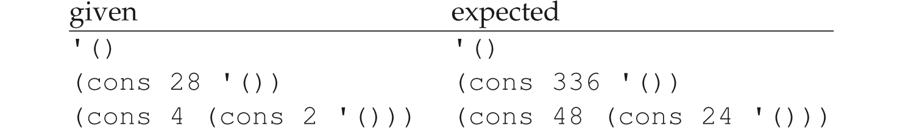
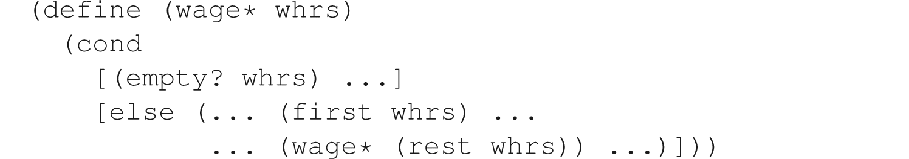
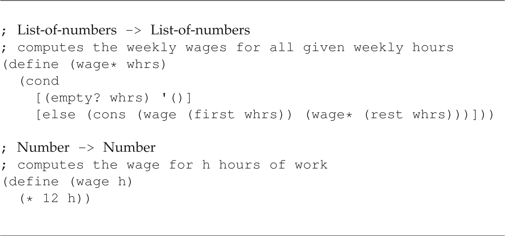

10.1 Functions that Produce Lists
Here is a function for determining the wage of an hourly employee:
; Number -> Number
; computes the wage for h hours of work
(define (wage h)
(* 12 h))
It consumes the number of hours worked and produces the wage. A company that wishes to use payroll software isn’t interested in this function, however. It wants one that computes the wages for all its employees.
Call this new function wage*. Its task is to process all employee work hours and to determine the wages due to each of them. For simplicity, let’s assume that the input is a list of numbers, each representing the number of hours that one employee worked, and that the expected result is a list of the weekly wages earned, also represented with a list of numbers.
Since we already have a data definition for the inputs and outputs, we can immediately move to the second design step:
; List-of-numbers -> List-of-numbers
; computes the weekly wages for the weekly hours
(define (wage* whrs)
'())
Next you need some examples of inputs and the corresponding outputs. So you make up some short lists of numbers that represent weekly hours:

In order to compute the output, you determine the weekly wage for each number on the given input list. For the first example, there are no numbers on the input list so the output is '(). Make sure you understand why the second and third expected outputs are what you want.
Given that wage* consumes the same kind of data as several other functions from chapter 8 and given that a template depends only on the shape of the data definition, you can reuse this template:

In case you want to practice the development of templates, use the questions from figure 52.
It is now time for the most creative design step. Following the design recipe, we consider each cond line of the template in isolation. For the non-recursive case, (empty? whrs) is true, meaning the input is '(). The examples from above specify the desired answer, '(), and so we are done.
In the second case, the design questions tell us to state what each expression of the template computes:
• (first whrs) yields the first number on whrs, which is the first number of hours worked;
• (rest whrs) is the rest of the given list; and
• (wage* (rest whrs)) says that the rest is processed by the very function we are defining. As always, we use its signature and its purpose statement to figure out the result of this expression. The signature tells us that it is a list of numbers, and the purpose statement explains that this list represents the list of wages for its input, which is the rest of the list of hours.
The key is to rely on these facts when you formulate the expression that computes the result in this case, even if the function is not yet defined.
Since we already have the list of wages for all but the first item of whrs, the function must perform two computations to produce the expected output for the entire whrs: compute the weekly wage for (first whrs) and construct the list that represents all weekly wages for whrs. For the first part, we reuse wage. For the second, we cons the two pieces of information together into one list:
(cons (wage (first whrs)) (wage* (rest whrs)))
And with that, the definition is complete: see figure 64.

Figure 64: Computing the wages of all employees
Exercise 161. Translate the examples into tests and make sure they all succeed. Then change the function in figure 64 so that everyone gets $14 per hour. Now revise the entire program so that changing the wage for everyone is a single change to the entire program and not several. 
Exercise 162. No employee could possibly work more than 100 hours per week. To protect the company against fraud, the function should check that no item of the input list of wage* exceeds 100. If one of them does, the function should immediately signal an error. How do we have to change the function in figure 64 if we want to perform this basic reality check?
Show the products of the various steps in the design recipe. If you are stuck, show someone how far you got according to the design recipe. The recipe isn’t just a design tool for you to use; it is also a diagnosis system so that others can help you help yourself.
Exercise 163. Design convertFC. The function converts a list of measurements in Fahrenheit to a list of Celsius measurements.
Exercise 164. Design the function convert-euro, which converts a list of US$ amounts into a list of € amounts. Look up the current exchange rate on the web.
Generalize convert-euro to the function convert-euro*, which consumes an exchange rate and a list of US$ amounts and converts the latter into a list of € amounts.
Exercise 165. Design the function subst-robot, which consumes a list of toy descriptions (one-word strings) and replaces all occurrences of "robot" with "r2d2"; all other descriptions remain the same.
Generalize subst-robot to substitute. The latter consumes two strings, called new and old, and a list of strings. It produces a new list of strings by substituting all occurrences of old with new.